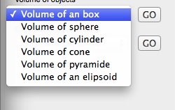
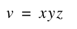
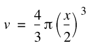
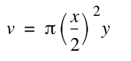
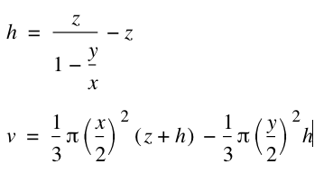
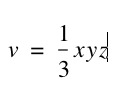
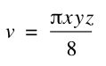

Volum of objects functions
Here is the list of functions for calculation volume of different objects. Be aware of the units. If you measure the objects in centimeters, the unit of the volume will be cm^3. To go from cm^3 to liters, you have to divide by 1000 (10^3).

The list of volume objects is somewhat shorter than the area list. Remember, you can often use area functions to calculate volume. If it is a hexagone-shaped rod, you can use the are of reg polygon and multiply by the length.
The first out, is a easy one. Volume of a box. Its simply multiply the sides in each direction. Anyway, for the completeness, I have made a function for it.
boxVolume(x; y; z )
Where
x = width
y = hight
z = depth
Using the following formula:

Example:
boxVolume(10;15;20)=3000
----------------------------------
The next object is volume of a sphere.
ballVolume(x )
Where
x = diameter (usually it is easier to obtain the diameter than the radius, so we made the formula with diameter)
Using the following formula:

Example:
ball with diameter of 20 cm, what is the volume?
ballVolume(20)=4188.790204 cm^3
----------------------------------------
The next object is volume of a cylinder:
cylVolume(x; y )
Where
x = outher diameter
y = length
Using the following formula:

Example:
A cylinder, 10 cm diameter and 100 cm long:
cylVolume(10;100)=7853.981635
----------------------------------
The next object is volume of a cone or truncated cone:
coneVolum(x; y; z )
Where
x = bottom diameter
y = top diameter (=0)
z = hight
Using the following formulas

Here we have the first equation, that determines the height of the missing part in case of a truncated cone,
and the next formula calculates the volume of the whole (including missing part) and then calculate the volum of the missing part that is subtracted. If the top diameter is zero, then h will be zero, and the second part of the main formula also zero.
Example:
Truncated cone, 15 cm base diameter, and 10 cm top diameter. The cone is 5 cm tick.
coneVolum(15;10;5)=621.7735458 cm^3
Another example: lets say, we have a truncated cone like the one above. Then we have a hole trough that is also cone-shaped. the bottom of the hole is 12 cm, and the top is 8 cm. The material is some kind of plastic that have a weight of 2g/cm^3. How much is the weight of the whole thing ?
(coneVolum(15;10;5)-coneVolum(12;8;5))*2/1000=0.4476769528
Also 0,448 Kg.
-------------------------
The next is volume of a pyramide with four sides:
PyramidVolume(x; y; z )
Where
x = length of one side of base
y = length of second side of base
z = height from center of base to top
Using the following formulas

Example:
Pyramide with four sides, base is 12 times 10 cm, and the height is 20 cm. What is the volume?
PyramidVolume(12;10;20)=800 cm^3
--------------------------
The last function in the volum group is the elipsoid. An elipsoid is a kind of sphere, where the diameter is different in the 3 planes.
elipsoidVolume(x; y; z )
Where
x = diameter x-plane
y = diameter y-plane
z = diameter z-plane
Using the following formula:

As the volume of a sphere, is pi*r^3, we have the diameters, so it will be divided by 2^3 = 8.
Example:
Elipsoide with with 10 x 10, and lenght of 15 cm. What is the volume ?
elipsoidVolume(10;15;10)=589.0486226 cm^3
This was the last function in the volume group. If you have any ideas to more volumes that would be useful to have in this collection, just send me an e-mail, and I will take it into consideration. The next series is the circumference formulas (perimeter)